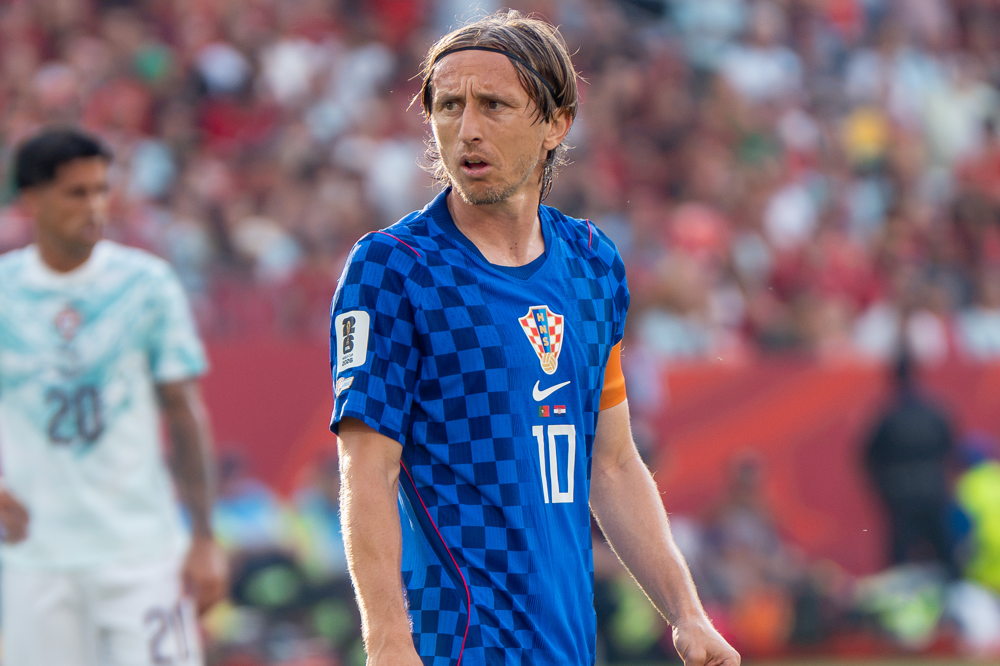

Poucos jogadores atravessaram tantas eras do futebol mantendo o mesmo nível de influência de Luka Modrić. Nascido em 9 de setembro de 1985, em Zadar, o croata enfrentou a guerra durante a infância, viveu como refugiado com a família, precisou superar dúvidas sobre seu porte físico e passou por empréstimos antes de se consolidar profissionalmente.
O menino franzino que jogava bola nos arredores de hotéis em Zadar tornou-se o atleta mais vitorioso da história do Real Madrid, e líder em campanhas históricas da seleção croata nas Copas do Mundo de 2018 e 2022.
A longevidade também se transformou em parte essencial de seu legado. Depois de 13 temporadas na Espanha, ele chegou ao Milan em 2025, disputou 37 partidas em seu primeiro ano na Itália e, já aos 40 anos, teve a permanência confirmada até 30 de junho de 2027.
Infância marcada pela Guerra
A trajetória de Luka Modrić não pode ser compreendida sem o contexto de sua infância. Ele nasceu em Zadar, quando a Croácia ainda fazia parte da antiga Iugoslávia, e passou os primeiros anos na região de Modrići, próxima às montanhas Velebit.
Com o avanço da Guerra de Independência da Croácia, iniciada em 1991, sua família precisou abandonar a área. O avô paterno do jogador, também chamado Luka, foi morto durante o conflito. A casa da família foi incendiada, e os Modrić buscaram abrigo em Zadar.
Luka viveu durante anos com os pais e as irmãs em hotéis que receberam famílias refugiadas pela guerra, principalmente o Hotel Kolovare. O som de sirenes, bombas e mísseis fez parte de sua infância, mas o futebol funcionou como refúgio emocional. Mesmo em um cenário de insegurança, ele passava horas jogando nos estacionamentos e espaços disponíveis próximos ao hotel.
A experiência não transformou Modrić em uma figura pública marcada por discursos de ressentimento. Ao longo da carreira, o croata tratou o período como uma realidade dolorosa que ajudou a formar sua personalidade, sua capacidade de enfrentar pressão e sua disposição para superar obstáculos.
O início da trajetória no esporte
O primeiro ambiente organizado de Luka Modrić no futebol foi o NK Zadar. O talento técnico era evidente, mas seu físico gerava desconfiança. Baixo, leve e aparentemente frágil para os padrões do futebol profissional, ele precisou convencer treinadores de que compensava a falta de força com inteligência, domínio da bola, agilidade e compreensão do jogo.
Aos 16 anos, Modrić entrou para as categorias de base do Dinamo Zagreb. O clube percebeu seu potencial, mas entendeu que o meio-campista precisava ganhar experiência em competições profissionais mais físicas. Por isso, o início de sua carreira foi construído por meio de dois empréstimos decisivos.
O primeiro ocorreu no Zrinjski Mostar, da Bósnia e Herzegovina, na temporada 2003/04. Com apenas 18 anos, enfrentou um campeonato de marcação pesada, campos difíceis e pouco espaço para jogadores criativos. A experiência acelerou seu amadurecimento. Ele próprio resumiria mais tarde que quem conseguia jogar naquela liga poderia atuar em qualquer lugar.
Modrić foi escolhido pelos torcedores como o melhor jogador do Zrinjski naquela temporada. Depois, seguiu para o Inter Zaprešić, ajudando a equipe a terminar o Campeonato Croata na segunda colocação. O rendimento lhe rendeu o prêmio de melhor jogador jovem da Croácia e abriu definitivamente as portas do Dinamo.
O início vitorioso em Zagreb
De volta ao Dinamo, ele deixou de ser apenas uma promessa. Passou a controlar o meio-campo, participar da construção ofensiva, chegar à área e decidir partidas com passes, assistências e gols de média distância.
Entre 2005 e 2008, foi protagonista de uma fase dominante do time no futebol croata. O clube conquistou três campeonatos nacionais consecutivos, duas Copas da Croácia e uma Supercopa. Modrić recebeu a camisa 10, ganhou responsabilidades e também começou a se estabelecer na seleção do país.
Considerando todas as competições, ele encerrou sua passagem pelo Dinamo com 128 jogos e 32 gols. Mais importante do que a produção ofensiva foi a evolução como organizador. O jogador já mostrava as características que marcariam sua carreira: capacidade de escapar da pressão, passes verticais, leitura para acelerar ou desacelerar o jogo e intensidade para participar das duas fases.
A chegada na Inglaterra
O Tottenham contratou Luka Modrić em 2008. A mudança representava seu primeiro grande teste em uma das principais ligas da Europa. A Premier League tinha ritmo elevado, contato físico constante e exigências defensivas maiores do que aquelas encontradas no futebol croata.
A adaptação não foi imediata. Modrić chegou a ser utilizado em posições mais abertas e sofreu com o estilo físico do campeonato. Aos poucos, encontrou seu melhor espaço no centro do campo e se tornou o cérebro da equipe treinada por Harry Redknapp.
Ao lado de jogadores como Gareth Bale, Rafael van der Vaart e Peter Crouch, o croata ajudou o Tottenham a terminar a Premier League de 2009/10 na quarta colocação, garantindo a primeira classificação do clube para a Champions League na era moderna da competição.
Na temporada seguinte, os Spurs avançaram até as quartas de final da Champions. A campanha teve confrontos marcantes contra Inter de Milão e Milan antes da eliminação diante do Real Madrid. Modrić foi eleito o melhor jogador da temporada do Tottenham e passou a ser observado pelos maiores clubes europeus.
Em quatro temporadas na Inglaterra, disputou 160 partidas e marcou 17 gols. Em seu último ano, 2011/12, fez cinco gols e deu cinco assistências. Embora não tenha conquistado títulos pelo Tottenham, deixou o clube como um dos principais responsáveis por sua retomada competitiva no cenário europeu.
Chegada na Espanha e desconfiança inicial
O Real Madrid contratou Modrić em agosto de 2012, após uma negociação prolongada com o Tottenham. José Mourinho queria um meio-campista capaz de receber a bola sob pressão, quebrar linhas e oferecer alternativas contra adversários fechados.
A estreia já trouxe um título, a Supercopa da Espanha contra o Barcelona, mas a primeira temporada foi irregular. Modrić precisou se adaptar ao jogo espanhol, à concorrência no elenco e à pressão permanente do Real Madrid. Em uma enquete feita pelo jornal Marca, a torcida chegou votar como uma das piores contratações daquele período.
A resposta ocorreu dentro de campo. Um dos momentos de virada aconteceu em março de 2013, quando Modrić saiu do banco e marcou um grande gol contra o Manchester United, em Old Trafford, pelas oitavas de final da Champions League. A atuação ajudou o Real a virar a partida e avançar no torneio.
Com a chegada de Carlo Ancelotti, o croata ganhou continuidade e se tornou um dos pilares do meio-campo. Sua combinação com Toni Kroos e Casemiro formaria posteriormente um dos trios mais importantes da história recente do futebol.
O escanteio que mudou uma final
A primeira Champions League de Modrić foi conquistada em 2014, na histórica final contra o Atlético de Madrid, em Lisboa. O Real perdia por 1 a 0 até os acréscimos do segundo tempo, quando o croata cobrou o escanteio que terminou no gol de cabeça de Sergio Ramos.
O empate aos 48 minutos levou a decisão para a prorrogação. Gareth Bale, Marcelo e Cristiano Ronaldo marcaram, o Real venceu por 4 a 1 e conquistou La Décima, a décima Copa dos Campeões de sua história.
A participação de Modrić naquele lance sintetizou sua importância. Mesmo sem apresentar números de um atacante, ele aparecia nos momentos decisivos por meio da qualidade técnica, das bolas paradas, da leitura de jogo e da precisão dos passes.
Seis títulos da Champions League
- 2013/14 — Real Madrid 4 x 1 Atlético de Madrid, após prorrogação
- 2015/16 — Real Madrid 1 x 1 Atlético de Madrid, com vitória nos pênaltis
- 2016/17 — Real Madrid 4 x 1 Juventus
- 2017/18 — Real Madrid 3 x 1 Liverpool
- 2021/22 — Real Madrid 1 x 0 Liverpool
- 2023/24 — Real Madrid 2 x 0 Borussia Dortmund
Entre 2016 e 2018, o Real Madrid tornou-se o primeiro clube a conquistar três Champions consecutivas desde a mudança de formato do torneio. Modrić era uma das engrenagens centrais da equipe comandada por Zinedine Zidane.
O croata conectava defesa e ataque, ajudava a escapar da pressão adversária e dava equilíbrio para que Cristiano Ronaldo, Karim Benzema e os demais jogadores ofensivos recebessem a bola em melhores condições. Kroos controlava a circulação, Casemiro oferecia proteção e Modrić acrescentava mobilidade, criatividade e imprevisibilidade.
Na campanha de 2021/22, já com 36 anos, voltou a ser decisivo. A assistência de trivela para Rodrygo no duelo contra o Chelsea, nas quartas de final, tornou-se uma das jogadas mais lembradas daquela edição. O Real eliminou também Paris Saint-Germain e Manchester City em viradas dramáticas antes de derrotar o Liverpool na final.
Em 2024, Modrić ganhou sua sexta Champions League pelo Real Madrid e entrou no grupo mais vitorioso da história da competição, ao lado de Francisco “Paco” Gento e Dani Carvajal, também hexacampeões pelo clube espanhol. Logo atrás aparecem Paolo Maldini, com cinco títulos pelo Milan, e Cristiano Ronaldo, campeão uma vez pelo Manchester United e quatro pelo Real Madrid.
Ele deixou o Real como uma lenda mundial e como um dos maiores meio-campistas da história da competição.
Recordista de títulos do Real Madrid
A passagem de Modrić pelo time merengue durou 13 temporadas, de 2012 a 2025. Foram 597 jogos, 43 gols e 28 títulos oficiais, número que o colocou como o jogador mais vitorioso da história do clube no momento de sua despedida.
Conquistas:
- 6 Champions League
- 6 títulos mundiais de clubes
- 5 Supercopas da Europa
- 4 Campeonatos Espanhóis
- 2 Copas do Rei
- 5 Supercopas da Espanha
Além dos troféus, Modrić atravessou diferentes ciclos. Jogou com Cristiano Ronaldo no auge, participou da renovação que colocou Vinícius Júnior e Rodrygo no ataque e dividiu o meio-campo com nomes de gerações diferentes, como Xabi Alonso, Sami Khedira, Casemiro, Kroos, Federico Valverde e Jude Bellingham.
Sua permanência por tanto tempo em um clube de exigência extrema demonstrou mais do que talento. Ele soube adaptar seu posicionamento, administrar minutos, aceitar mudanças de função e continuar útil mesmo quando deixou de ser titular absoluto.
O ano que encerrou domínio de Messi e Cristiano Ronaldo
Em 2018 Luka Modrić entrou definitivamente no topo do futebol mundial. Pelo Real Madrid, ele conquistou a terceira Champions consecutiva. Pela Croácia, liderou a seleção até a primeira final de Copa do Mundo de sua história.
Modrić recebeu a Bola de Ouro da Copa da Rússia, prêmio entregue ao melhor jogador do torneio. Meses depois, também foi eleito o melhor jogador do ano pela UEFA, venceu o prêmio The Best da Fifa e conquistou a Bola de Ouro da France Football.
A premiação teve um peso histórico porque encerrou uma sequência de dez anos em que Lionel Messi e Cristiano Ronaldo haviam dividido todas as Bolas de Ouro. Modrić tornou-se o primeiro vencedor diferente da dupla desde Kaká, premiado em 2007.
Na votação daquele ano, o croata terminou à frente de Cristiano Ronaldo e Antoine Griezmann. O resultado reconheceu não apenas uma temporada, mas a influência de um meio-campista que ditava o ritmo dos jogos, fazia o time funcionar e liderava sem depender de grandes números de gols.
Os Mundiais pela seleção
Modrić disputou cinco Copas do Mundo pela Croácia: 2006, 2014, 2018, 2022 e 2026. Sua trajetória no torneio acompanhou a transformação da seleção croata, que passou de participante competitiva a candidata real às fases decisivas.
Copa de 2006
Com 20 anos, Modrić fez parte do elenco croata na Alemanha. Ainda era reserva e entrou durante as partidas contra Japão e Austrália. A Croácia foi eliminada na fase de grupos, mas a competição representou o primeiro contato do jovem com o maior palco do futebol.
Copa de 2014
No Brasil, Modrić já era titular e referência técnica. A Croácia perdeu para o Brasil por 3 a 1 na abertura, goleou Camarões por 4 a 0 e foi derrotada pelo México por 3 a 1. Com três pontos, novamente caiu na primeira fase.
Copa de 2018
A campanha na Rússia mudou o patamar da seleção. A Croácia venceu Nigéria, Argentina e Islândia na fase de grupos. Modrić marcou contra os nigerianos e fez um grande gol de fora da área na vitória por 3 a 0 sobre a Argentina.
Nas oitavas, contra a Dinamarca, perdeu um pênalti durante a prorrogação, mas mostrou força mental para converter sua cobrança na disputa decisiva. A Croácia eliminou os dinamarqueses e, depois, superou a Rússia também nos pênaltis.
Na semifinal, venceu a Inglaterra por 2 a 1 na prorrogação, com gol de Mario Mandžukić. A decisão terminou com vitória da França por 4 a 2, mas Modrić recebeu a Bola de Ouro do Mundial e conduziu seu país à maior campanha de sua história.
Copa de 2022
No Catar, a Croácia voltou a superar as expectativas. Depois de avançar em um grupo com Marrocos, Canadá e Bélgica, eliminou o Japão nos pênaltis.
Nas quartas, enfrentou o Brasil. A seleção brasileira abriu o placar com Neymar na prorrogação, mas Bruno Petković empatou. Na disputa por pênaltis, os croatas venceram por 4 a 2, com Modrić convertendo sua cobrança.
A caminhada terminou na semifinal, com derrota por 3 a 0 para a Argentina. Na disputa pelo terceiro lugar, a Croácia venceu Marrocos por 2 a 1. Modrić recebeu a Bola de Bronze como o terceiro melhor jogador do torneio.
Copa de 2026 e a marca histórica
Aos 40 anos, Modrić disputou sua quinto Mundial, realizado nos Estados Unidos, no Canadá e no México. A Croácia começou com derrota por 4 a 2 para a Inglaterra, mas reagiu ao vencer o Panamá por 1 a 0 e Gana por 2 a 1.
O jogo contra o Panamá marcou a 200ª partida de Modrić pela seleção. Diante de Gana, seu escanteio originou o gol de cabeça de Nikola Vlašić. Aos 40 anos e 291 dias, tornou-se o jogador mais velho a dar uma assistência em uma Copa do Mundo.
A Croácia avançou em segundo lugar no grupo, mas foi eliminada por Portugal na fase de 32 avos. Ivan Perišić abriu o placar, Cristiano Ronaldo empatou em cobrança de pênalti e Gonçalo Ramos marcou o gol português nos acréscimos.
Modrić encerrou a competição com 202 partidas pela seleção e 23 jogos em Copas do Mundo. Somando toda a trajetória internacional até aquele momento, o capitão acumulava 29 gols pela Croácia e aparecia entre os jogadores com mais partidas por uma seleção nacional na história.
Os números de jogos e gols divulgados pelos próprios clubes oferecem o retrato mais seguro de suas principais passagens:
- Dinamo Zagreb — 128 jogos e 32 gols
- Tottenham — 160 jogos e 17 gols
- Real Madrid — 597 jogos e 43 gols
- Milan em 2025/26 — 37 jogos e 2 gols
Antes da consolidação no Dinamo, Modrić também defendeu Zrinjski Mostar e Inter Zaprešić por empréstimo.
Os números mostram que nunca foi um meia definido apenas pela participação direta em gols. Sua maior influência sempre esteve na construção das jogadas, no controle territorial e na progressão da bola.
Chegada na Itália
Modrić encerrou sua passagem pelo Real Madrid em 2025, após a disputa do Mundial de Clubes. Livre no mercado, assinou com o Milan em 14 de julho daquele ano. O contrato inicial tinha duração até 30 de junho de 2026, com possibilidade de extensão por mais uma temporada.
A transferência teve um componente simbólico. O croata chegou a outro gigante europeu, conhecido historicamente por valorizar meio-campistas técnicos e jogadores experientes. Escolheu a camisa 14 e assumiu rapidamente um papel de liderança no elenco.
O desafio era diferente daquele vivido em Madrid. No Real, Modrić fazia parte de uma estrutura consolidada e cercada por jogadores habituados a disputar todos os títulos. No Milan, chegou para ajudar na reorganização do meio-campo, oferecer controle em jogos difíceis e elevar o nível competitivo de uma equipe em busca de estabilidade.
Mesmo aos 40 anos, não foi tratado apenas como uma opção de banco. Participou de 37 partidas na temporada 2025/26 e teve presença frequente entre os titulares. Em outubro de 2025, foi eleito pelos torcedores o melhor jogador do mês do Milan. Também recebeu prêmios de destaque em partidas contra adversários como Lecce, Cagliari, Pisa e Juventus.
Permanência até 2027
O rendimento no primeiro ano levou o Milan a confirmar a continuidade do croata. Em 23 de julho de 2026, o clube anunciou um novo contrato válido até 30 de junho de 2027.
A renovação significa que Modrić poderá atuar profissionalmente aos 41 anos, idade que completará em setembro de 2026. Ele continuará usando a camisa 14 e integrando um elenco que vê sua experiência como valor esportivo, e não apenas como elemento de liderança fora de campo.
O próprio comunicado do Milan destacou a importância do jogador desde sua chegada, mencionando sua qualidade, humildade, paixão e influência dentro e fora dos gramados. A decisão confirmou que a passagem pela Itália não seria apenas uma temporada de despedida.
A longevidade de Modrić pode ser explicada por uma combinação de preparação física, inteligência tática, técnica e capacidade de adaptação. Seu futebol nunca dependeu exclusivamente de explosão ou velocidade em longas distâncias.
A permanência de Modrić entre os protagonistas depois dos 40 anos o coloca em um grupo raríssimo de atletas capazes de atravessar gerações sem perder relevância competitiva. Embora pertença a outro esporte, a trajetória de LeBron James na NBA, que 41 anos assinou com o 76ers para jogar a sua 24º temporada na liga. Os dois atletas oferecem um paralelo interessante: os dois adaptaram o estilo de jogo, administraram melhor o esforço físico e transformaram inteligência e experiência em ferramentas para prolongar a carreira no mais alto nível.
Questões técnicas como a famosa trivela não é apenas um recurso estético. Ela permite alterar o ângulo do passe sem mudar completamente a posição do corpo, surpreendendo linhas defensivas.
Sua evolução física também foi decisiva. O jogador considerado pequeno demais no início da carreira desenvolveu resistência, equilíbrio e capacidade para suportar contatos. Mesmo com 40 anos, continuou participando defensivamente, recuperando bolas e acumulando grande volume de passes.
Na temporada 2025/26, chegou a disputar 34 partidas da Serie A e ultrapassou 2.800 minutos no campeonato. Em uma atuação contra a Juventus, completou 53 passes, venceu quatro de seis duelos e manteve influência ofensiva e defensiva até os minutos finais.
O legado no futebol
A grandeza dele não está apenas na quantidade de troféus. Sua carreira ajudou a reposicionar o papel do meio-campista em uma era dominada por números ofensivos, velocidade e exposição individual.
Ele venceu a Bola de Ouro sem ser artilheiro, conquistou seis Champions como organizador e colocou uma seleção de aproximadamente quatro milhões de habitantes em uma final e uma semifinal de Copa do Mundo.
Também se tornou um símbolo de superação sem permitir que a narrativa de sua infância substituísse o futebol. A guerra explica parte de sua formação humana, mas sua permanência no topo foi construída com técnica, disciplina, competitividade e uma rara capacidade de compreender o jogo.
No Dinamo Zagreb, deixou de ser o jovem considerado frágil. No Tottenham, provou que poderia competir na Premier League. No Real Madrid, transformou-se em recordista de títulos e um dos maiores meio-campistas da história. Pela Croácia, tornou-se capitão, recordista de partidas e líder da geração mais vitoriosa do país. No Milan, mostrou que ainda poderia ser relevante aos 40 anos.
A renovação até 2027 amplia uma carreira que já parecia completa. Ele não permanece no futebol apenas para acumular jogos ou receber homenagens. Continua porque ainda consegue controlar partidas, competir em alto nível e encontrar soluções que poucos jogadores enxergam.
Essa talvez seja a melhor definição de seu legado: Luka Modrić transformou inteligência em longevidade, adversidade em força e controle de jogo em uma forma própria de grandeza.